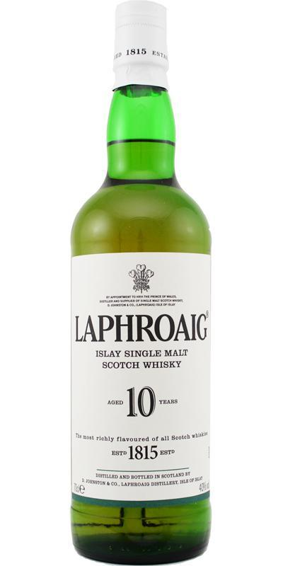
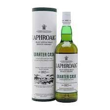
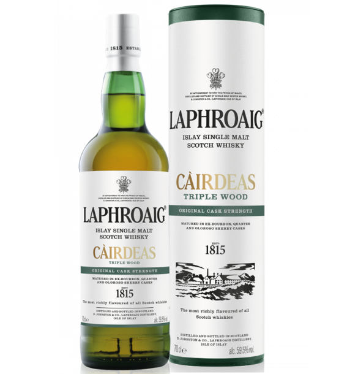

Laphroaig 10 Years Old
라프로익 10년은 전통적인 오크 버번 캐스크에서 최소 10년간 숙성됩니다. 알코올 도수는 40%이고 강렬한 정로환의 향이 특징이며 요오드, 해초, 약간의 바닐라와 과일 향이 느껴집니다. 스모키한 피트 향이 입안을 가득 채우며 바다 소금, 시트러스한 맛과 복합적인 맛이 조화를 이룹니다.
Laphroaig Quarter Cask
라프로익 쿼터캐스크는 숙성년수 미표기(NAS) 위스키로 여러 스피릿(위스키 원액) 을 블렌딩 하여 최상의 맛을 냅니다. 알코올 도수는 48%로 병입되며 강렬한 피트와 스모키한 향이 주를 이루며 바닐라와 코코넛, 약간의 바나나 향이 느껴집니다. 입안에서는 스모키한 피트와 함께 달콤한 카라멜, 견과류, 그리고 약간의 과일 맛이 조화를 이룹니다.
Laphroaig Triple Wood
라프로익 트리플우드는 숙성년수 미표기(NAS) 위스키로 다양한 캐스크에서 숙성 과정을 거칩니다. 알코올 도수는 48%로 병입되며 강한 피트 향과 스모키한 향이 느껴지며, 향신료, 건포도, 크림 브륄레, 약간의 견과류 향이 납니다. 스모키한 피타와 함께 달콤한 셰리, 말린 과일, 초콜릿의 맛이 입안을 가득 채웁니다.